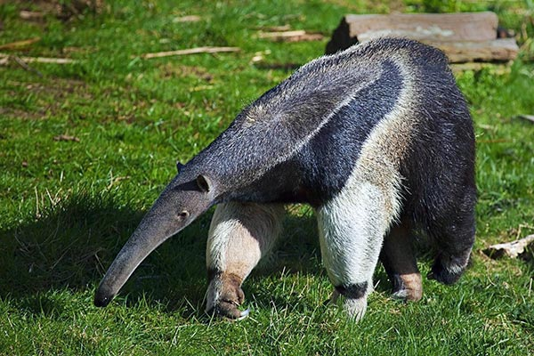

Одно из самых удивительных и хорошо известное всем любителям флоры животных – муравьед. Это удивительное млекопитающее относится к отряду неполнозубых. В настоящее время муравьеды часто выращиваются в качестве экзотических домашних питомцев, а первым владельцем такого животного был великий художник с мировой известностью – Сальвадор Дали.
Семейство муравьедовые объединяет два рода, три вида и одиннадцать подвидов, которые отличаются по многим параметрам. Тем не менее, существуют и общие, характерные для всех видов признаки, включая очень длинный язык длиной до 60 см, характерную поставку ног и очень сильный хвост, который помогает животному лазать по деревьям.
Размеры взрослого животного могут варьироваться. В естественных условиях самцы имеют более крупные размеры, нежели самки. Все муравьеды обладают длинными, трубкообразными мордами, и имеют маленькую и узкую ротовую щель. Характерным также является небольшой размер ушей и глаз. На передних пятипалых конечностях располагаются длинные и острые, крючковатого типа когти. На задних лапах имеется четыре или пять пальцев с не слишком длинными когтями. Всё тело покрывают густые волосы, которые, в зависимости от видовых особенностей, могут быть короткими и мягкими или же длинными и грубоватыми.
| Домен: | Эукариоты |
| Царство: | Животные |
| Тип: | Хордовые |
| Класс: | Млекопитающие |
| Отряд: | Неполнозубые |
| Семейство: | Муравьедовые |